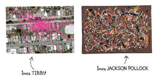
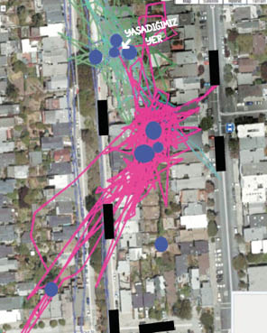
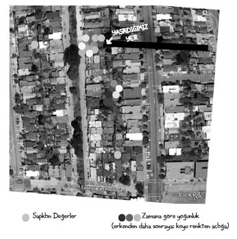

13
Wendy’nin işe el koyma vakti gelmişti. Medyumlar, kameralar, hayvan iletişim kursu, hayvan dedektifleri? Fikirlerim bizi yarı yolda bırakmıştı.
Wendy, “GPS haritalarına dönüyoruz,” dedi. “Elimizde yirmi iki harita var. Cevap orada bir yerde.”
“İyi de o haritalar karalamadan ibaret!” diye inledim.
Gerçekten de öyleydi. Çok fazla bilgi, şey, çok fazlaydı işte. Pembe çizgilerin hacmi ve geometrik yapısı, kanıttan ziyade soyut sanat eserlerini andırıyordu.

Wendy dizime hafifçe vurup, çizgilerin taşikardiyi gösteren bir EKG grafiği gibi zikzaklar çizdiği konusunda bana katıldığını belirtti. Evet, GPS sinyali binalardan, bitki örtüsünden ve Tibby’nin çenesinden sektiği için anormal çizgiler oluşturma eğilimindeydi. Evet, ne kadar dikkatli bakarsak bakalım bu noktada o karmakarışık izlerin başını sonunu bulmamız mümkün değildi.
“Ama başka bir yol var,” dedi.
Beni bilgisayara götürüp, kavuşturulmuş kollarımı ve bükülmüş ağzımı dikkate almadan küçük bir çocukla ilgilenen uçuş görevlisi gibi sandalyeye yerleştirdi. Kendisi de yanıma oturdu. Klavyenin tuşlarına vurdu. Ekran canlandı. Wendy ilk haritayı tıkladı; harita havai fişek gösterisi gibi açıldı, pembe çizgiler, yeşil ağaçlar ve gri caddeler dışarı doğru patlayarak ekranı teslim aldı. Wendy ikinci haritayı tıkladı, o da patlayarak açıldı. Sonra fareyi tıklatarak oradan oraya sürüklemeye koyuldu. Bir sirk eğitmeninin becerikli bilek hareketleriyle aslanları birbiri ardından alevli çemberlerden atlattı. Sonunda arkasına yaslandığında, ikinci haritadaki caddeler, ağaçlar ve evler kaybolmuştu ama izler yerli yerindeydi.
Wendy bu haritayı ilkinin üstüne koydu. Şimdi elimizde, mahallemizin sokaklarının üzerine yerleştirilmiş iki iz vardı.
Wendy aynı sihirli hareketleri üçüncü ve dördüncü haritayla; sonra da beşinci ve altıncıyla tekrarladı. Farenin tıklanması ve sürüklenmesi, her birini Tibby’nin yolculuğunun pembe izleri dışındaki her türlü harita unsurundan arındırıp şeffaf bırakıyor; sonra hepsini birbirinin üstüne bindiriyordu. Sonunda elimizde güzelce destelenmiş bir siber harita yığını oldu.
Birdenbire bütün izleri tek bir grafikte görebilir olmuştuk.
“İnanılmaz,” diye bağırdım. Başka bir yüzyılda yaşasaydık Wendy’yi cadılık suçuyla kent konseyine teslim ederdim. “Ama yine de her şey karmakarışık.”
Wendy, “Çizgilerin en kalın olduğu yerleri göster,” diye emretti.
Gözlerimi kısarak öne eğildim. “İşte,” dedim parmağımı nazikçe ekrana koyarak. “Belki şurası da…” Bir parmak izi daha. “Şurası?”
Wendy başıyla onayladı ve gösterdiğim her yere bilgisayarla mavi bir nokta çizdi.

Ondan sonra sıradaki altı haritayı aldı, temizledi ve yeni bir deste oluşturdu. Sonra diğer altılıyı ve kalan dörtlüyü.
Artık elimizde Tibby’nin en çok gittiği yerleri işaretlediğimiz dört harita vardı. Wendy son bir gösterişli hareketle bunları da bir araya getirdi ve tek bir ana harita oluşturdu.
“Amanın,” deyip başımı ellerimin arasına aldım, fare gibi incecik bir sesle, “İnanamıyorum,” diye fısıldadım.
